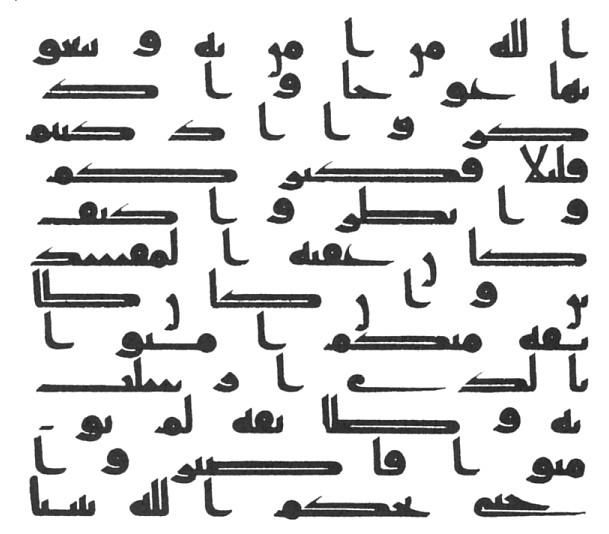

📗 2. Ünite Konu Özeti: İnancım ve Kur'an-ı Kerim

🎯 MEB Kazanımları
Kaynak: 2018 DKAB Öğretim Programı (MEB Talim ve Terbiye Kurulu) — 4.2. İslam'ı Tanıyalım
- 4.2.1 — İslam'ın inanç esaslarını sıralar.
- 4.2.2 — İslam'ın şartlarını söyler.
- 4.2.3 — Kur'an-ı Kerim'in iç düzeni ile ilgili kavramları tanımlar.
- 4.2.4 — Âmentü duasını okur, anlamını söyler.
🗺️ Kavram Haritası
Bu ünitenin MEB öğretim programında belirlenen anahtar kavramları, ünite temasıyla bağlantılı olarak aşağıda gösterilmiştir.

İslam'ın İnanç Esasları (İmanın Şartları)
1️⃣ İslam'ın İnanç Esasları (İmanın Şartları)
İslam’ın İnanç Esasları (İmanın Şartları)
0/7 adım- 01
📸 Gör
 Fotoğraf: Matt Wier — CC BY-SA 3.0 · Wikimedia Commons
Fotoğraf: Matt Wier — CC BY-SA 3.0 · Wikimedia CommonsDağların üzerinde yıldızlarla dolu bir gece. İnsan gökyüzüne bakınca düşünmeye başlar.
- 02
💡 Keşfet
Gökyüzüne baktığında aklına ilk hangi soru geliyor?
- 03
📖 Öğren
İman, kalpten inanmak ve doğrulamaktır. İmanın şartları altı tanedir: Allah’a, meleklerine, kitaplarına, peygamberlerine, ahiret gününe ve kadere iman.
Bu altı esas birbirine bağlıdır. Biri olmadan diğerleri eksik kalır.
- 04
📜 Ayet / Delil
“Elif Lâm Mîm. Bu, kendisinde şüphe olmayan kitaptır; muttakiler için bir hidayettir.”
— Bakara suresi, 1-2. ayetler
Konuyla bağlantısı: Ayet, imanın kaynağının Kur’an olduğunu gösterir. İnanç esaslarını da bu kitaptan öğreniriz.
- 05
🌍 Günlük Hayat
Bir arkadaşın sana “Neye inanıyorsun?” diye sorduğunda, altı esası sırayla anlatabilmek imanını bilmek demektir.
- 06
🧠 Düşün
İnanmak ile bilmek arasında sence nasıl bir fark var?Bu sorunun tek bir doğru cevabı yok — kendi cümlelerinle düşün.
- 07
🎯 Mini Kontrol
İmanın şartları kaç tanedir?
İslam dininde inanç esasları çok önemlidir. Bir kişinin Müslüman sayılabilmesi için inanması gerekli olan esaslara imanın şartları denir ve sayısı altıdır. Her Müslüman bunların tamamına gönülden ve şüphe etmeksizin inanır; birine inanıp diğerine inanmamak söz konusu olamaz — iman esasları bir bütündür.
- Allah'a inanmak
- Meleklere inanmak
- Kitaplara inanmak
- Peygamberlere inanmak
- Ahirete inanmak
- Kader ve kazaya inanmak
🕋 Allah'a İman
Müslüman olarak ilk görevimiz Allah'a (cc) inanmaktır: O'nun varlığına, birliğine iman etmek ve O'ndan başka ibadete layık hiçbir varlık olmadığını kabul etmektir. "Allah'a inandım de, sonra da dosdoğru ol." (Müslim, İman, 62.)
👼 Meleklere İman
Melekler, Allah'ın gözle görülmeyen, nurdan yarattığı varlıklardır; O'na ibadet ederler ve emrinden çıkmazlar. Bilinen dört büyük melek: Cebrail (as) (vahiy getirir), Mikâil (as) (doğa olaylarıyla görevli), İsrafil (as) (sûru üfleyecek melek), Azrail (as) (canları alan melek).
📖 Kitaplara İman
Allah'ın, peygamberleri aracılığıyla insanlara gönderdiği mesaja vahiy denir; çoğu zaman bu vahiy Cebrail (as) aracılığıyla peygambere ulaştırılır. Allah, bazı peygamberlerine emir ve yasaklarını içeren ilahi kitaplar göndermiştir.
- Tevrat — Hz. Musa'ya (as) indirildi.
- Zebur — Hz. Davud'a (as) indirildi.
- İncil — Hz. İsa'ya (as) indirildi.
- Kur'an-ı Kerim — Hz. Muhammed'e (sav) indirildi; ilahi kitapların sonuncusudur.
🕌 Peygamberlere İman
Hz. Muhammed (sav), Allah'ın gönderdiği peygamberlerin sonuncusudur. Ondan önce gelen tüm peygamberlere de inanır, aralarında ayrım yapmayız.
🌅 Ahirete İman
Dünya hayatının sona ermesinden sonra bütün insanların yeniden diriltileceğine, hesaba çekileceğine inanmaktır.
🌠 Kader ve Kazaya İman
Kader, Allah'ın evrende olmuş ve olacak her şeyi önceden bilip takdir etmesidir. Kaza ise takdir edilenin, zamanı geldiğinde gerçekleşmesidir.
🤔 Merak Ettin mi?
Kur'an'ın ilk emri "Oku!" (İkra) idi — ilk vahiy okuma-yazmayı bilmeyen Peygamberimize gelmişti, bu da ilmin İslam'da ne kadar önemli olduğunu gösterir.
🗺️ Kavram HaritasıKavram ilişkisi
Bu konunun alt başlıkları ve aralarındaki ilişki
🤔 Sıra SendeDüşün ve cevapla
İmanın esaslarından birini seç ve onun ne anlama geldiğini kendi cümlenle yaz.
📌 Aklında Kalsın
- İmanın esasları altı tanedir.
- Bunların tamamına inanmak bir bütündür.

İslam'ın Şartları
2️⃣ İslam'ın Şartları
İslam’ın Şartları
0/7 adım- 01
📸 Gör
 Fotoğraf: Bilinmeyen — CC BY-SA 4.0 · Wikimedia Commons
Fotoğraf: Bilinmeyen — CC BY-SA 4.0 · Wikimedia CommonsMekke’de Kâbe’yi tavaf eden hacılar. İslam’ın şartlarından biri burada yerine getirilir.
- 02
💡 Keşfet
Bu kadar insan neden aynı yerde, aynı yöne dönmüş olabilir?
- 03
📖 Öğren
İslam’ın şartları beştir: kelime-i şehadet getirmek, namaz kılmak, oruç tutmak, zekât vermek ve gücü yetenin hacca gitmesi.
Bunlar İslam’ın temel ibadetleridir. Her biri insanı hem Allah’a hem de topluma bağlar.
- 04
📜 Ayet / Delil
“Şüphesiz bu Kur’an en doğru yola iletir.”
— İsra suresi, 9. ayet
Konuyla bağlantısı: İslam’ın şartlarını da Kur’an’dan öğreniriz. Ayet, bu yolun doğruluğunu bildirir.
- 05
🌍 Günlük Hayat
Namaz vakti geldiğinde oyunu bir süre bırakmak, ramazanda ailenle sahura kalkmak İslam’ın şartlarının hayatındaki karşılığıdır.
- 06
🧠 Düşün
Beş şart arasında sence hangisi insanı en çok topluma bağlar? Neden?Bu sorunun tek bir doğru cevabı yok — kendi cümlelerinle düşün.
- 07
🎯 Mini Kontrol
Aşağıdakilerden hangisi İslam’ın şartlarından biri DEĞİLDİR?
Her Müslüman'ın yerine getirmesi gereken beş temel yükümlülüğe İslam'ın şartları denir. Allah'ı hoşnut etmek için yapılan bu ve benzeri her türlü güzel davranışa genel olarak ibadet adı verilir.
- Kelime-i şehadet getirmek
- Namaz kılmak
- Oruç tutmak
- Zekât vermek
- Hacca gitmek
☝️ Kelime-i Tevhid: "Lâ ilâhe illallah" — Allah'tan başka hiçbir ilah yoktur. Bu kısa söz, Allah'ın tek ve eşsiz olduğunu, O'ndan başka hiçbir varlığın ibadete layık olmadığını anlatır.
🗣️ Kelime-i Şehadet: "Eşhedü ellâ ilâhe illallah ve eşhedü enne Muhammeden abdühû ve rasûlüh" — Tanıklık ederim ki Allah'tan başka ilah yoktur ve Hz. Muhammed O'nun kulu ve peygamberidir.
🕌 Namaz: "Namaz dinin direğidir." (Tirmizi, İman, 8)
🌙 Oruç: İmsaktan iftara kadar Allah için yeme-içmeden uzak durmaktır. Tutamayanlar kaza eder ya da fidye verir.
💰 Zekât: Zengin Müslümanların malının belirli bir kısmını yılda bir kez ihtiyaç sahiplerine vermesidir.
🕋 Hac: İmkânı olan Müslümanların, ihram giyerek ömürlerinde bir kez Mekke'deki Kâbe'yi ziyaret etmesidir.
❌ Yanlış Bilinenler
❌ Bazı kişiler Kur'an'ın zamanla değiştiğini veya farklı nüshalarının birbirinden çok farklı olduğunu düşünür.
✅ Kur'an, Hz. Osman döneminde çoğaltılan Mushaf'tan bu yana tek bir harfi bile değişmeden, milyonlarca hafız tarafından da desteklenerek günümüze ulaşmıştır.
🌍 Gerçek Hayattan Bir Örnek
Bir hafız arkadaşının Kur'an'ı baştan sona ezbere okuyabilmesi, Kur'an'ın nesilden nesile nasıl korunduğunun somut bir örneğidir.
🔄 Adım AdımSüreç şeması
İslam’ın beş şartı
🏠 Günlük Hayattan
Bayram namazında bir araya gelmek, İslam’ın şartlarından birinin toplumu nasıl birleştirdiğini gösterir.
🤔 Sıra SendeDüşün ve cevapla
İslam’ın şartlarından hangisi her gün tekrarlanır? Neden böyle olduğunu düşün.
📌 Aklında Kalsın
- İslam’ın şartları beştir.
- Namaz günlük, oruç yıllık, hac ise ömürde bir kez farzdır.

Kur'an-ı Kerim
3️⃣ Kur'an-ı Kerim
Kur’an-ı Kerim
0/7 adım- 01
📸 Gör
 Metropolitan Museum of Art — CC BY 2.5 · Wikimedia Commons
Metropolitan Museum of Art — CC BY 2.5 · Wikimedia Commons“Mavi Kur’an”dan altın hatla yazılmış bir sayfa. Kur’an yüzyıllardır büyük bir özenle yazılmıştır.
- 02
💡 Keşfet
Bir kitabın bu kadar özenle yazılması, o kitap hakkında sana ne anlatır?
- 03
📖 Öğren
Kur’an-ı Kerim, Allah tarafından Hz. Muhammed’e (sav) indirilen son ilahi kitaptır. Surelerden, sureler ayetlerden oluşur.
Kur’an’da 114 sure vardır. En uzun suresi Bakara, en kısalarından biri Kevser’dir. Sayfalarına mushaf hâlinde bir araya getirilmiş şekliyle ulaşırız.
- 04
📜 Ayet / Delil
“Şüphesiz bu Kur’an en doğru yola iletir.”
— İsra suresi, 9. ayet
Konuyla bağlantısı: Ayet Kur’an’ın niçin indirildiğini tek cümlede söyler: insana doğru yolu göstermek için.
- 05
🌍 Günlük Hayat
Kur’an okurken abdestli olmak, mushafı yüksek ve temiz bir yere koymak, ona gösterdiğimiz saygının günlük hâlidir.
- 06
🧠 Düşün
Bir kitabın “yol gösterici” olması ne demektir? Sana yol gösteren başka neler var?Bu sorunun tek bir doğru cevabı yok — kendi cümlelerinle düşün.
- 07
🎯 Mini Kontrol
Kur’an-ı Kerim kaç sureden oluşur?
Kur'an-ı Kerim, Allah tarafından Cebrail (as) aracılığıyla Hz. Muhammed'e (sav) indirilmiştir. İlk vahiy 610 yılında Kadir Gecesi'nde geldi; 23 yıl sürdü, 632'de tamamlandı. Kur'an-ı Kerim Arapça olarak indirilmiştir ve insanlara doğru ile yanlışı ayırt etmede yol gösteren bir hidayet rehberidir.
- Ayet — Toplam 6236 ayet vardır.
- Sure — Toplam 114 sure vardır; Fatiha ile başlar, Nâs ile biter. En uzunu Bakara (286 ayet), en kısası Kevser (3 ayet).
- Cüz — Kur'an'ın 20'şer sayfalık 30 bölümünden biri.
- Hafız — Kur'an'ı ezberleyen kişi.
- Hatim — Kur'an'ı baştan sona okumak.
- Meal — Kur'an'ın başka dile çevirisi.
- Mukabele — Kur'an okurken metinden takip etme.
🤲 Kur'an-ı Kerim'e Saygımız: Kur'an, Allah'ın kelamı olduğu için ona büyük bir sevgi ve saygıyla yaklaşırız. Okumaya başlarken "Euzü-besmele" çekeriz; mümkünse abdestli oluruz ve elimizi, ağzımızı temiz tutmaya özen gösteririz. Kur'an'ı yere koymaz, üzerine eşya koymaz; onu rahle gibi temiz ve yüksek bir yerde tutarız. Biri Kur'an okurken sessizce dinlemek de ona gösterdiğimiz saygının bir parçasıdır.
💭 Düşün ve Cevapla
Kur'an-ı Kerim'i sadece ezberlemek mi yeterlidir, yoksa anlamını öğrenmek de mi gerekir? Neden?
👨👩👧 Ailemle Yapıyorum
Ailenle birlikte Âmentü duasını Türkçe anlamıyla birlikte okuyun, her bir iman esasını kısaca sohbet ederek pekiştirin.
🏠 Günlük Hayattan
Kur’an-ı Kerim’i temiz elle almak ve saygıyla yerine koymak, ona verdiğimiz değeri gösterir.
📌 Aklında Kalsın
- Kur’an-ı Kerim İslam’ın kutsal kitabıdır.
- Hz. Muhammed’e 23 yılda indirilmiştir.

Bir Dua Tanıyorum: Âmentü Duası ve Anlamı
4️⃣ Bir Dua Tanıyorum: Âmentü Duası ve Anlamı
Bir Dua Tanıyorum: Âmentü Duası ve Anlamı
0/7 adım- 01
📸 Gör
 Fotoğraf: Dennis G. Jarvis — CC BY-SA 2.0 · Wikimedia Commons
Fotoğraf: Dennis G. Jarvis — CC BY-SA 2.0 · Wikimedia CommonsSütunları sıra sıra uzanan bir cami iç mekânı. Âmentü, burada da evde de okunabilen bir duadır.
- 02
💡 Keşfet
Bir duanın içinde inandığın her şeyi saymak sence neden önemli olabilir?
- 03
📖 Öğren
Âmentü duası, imanın altı şartını tek tek sayan bir duadır. “Âmentü” kelimesi “iman ettim” demektir.
Bu dua bir özet gibidir: neye inandığımızı sırayla hatırlatır.
- 04
📜 Ayet / Delil
“Ben iman ettim: Allah’a, meleklerine, kitaplarına, peygamberlerine, ahiret gününe, kadere; hayrın ve şerrin Allah’tan olduğuna. Tanıklık ederim ki Allah’tan başka ilah yoktur, Hz. Muhammed O’nun kulu ve peygamberidir.”
— Âmentü duasının anlamı
Konuyla bağlantısı: Duanın kendi metni, imanın altı esasını sırayla sayar. Konunun delili doğrudan bu duanın içindedir.
- 05
🌍 Günlük Hayat
Bir şeyi ezberleyip sonra anlamını öğrendiğinde nasıl daha kolay hatırladığını düşün — Âmentü de anlamıyla birlikte öğrenilir.
- 06
🧠 Düşün
Âmentü’de sayılan altı esastan hangisi sana en çok düşündürücü geliyor? Neden?Bu sorunun tek bir doğru cevabı yok — kendi cümlelerinle düşün.
- 07
🎯 Mini Kontrol
“Âmentü” kelimesi ne anlama gelir?
Âmentü duası, imanın altı şartını içeren bir duadır.
| Okunuşu | Anlamı |
|---|---|
| Âmentü | Ben iman ettim; |
| Billâhi | Allah'a, |
| Ve melâiketihî | Meleklerine, |
| Ve kütübihî | Kitaplarına, |
| Ve rusülihî | Peygamberlerine, |
| Velyevmilâhiri | Ahiret gününe, |
| Eşhedü ellâ ilâhe illallah ve eşhedü enne Muhammeden abdühû ve rasûlüh | Tanıklık ederim ki Allah'tan başka ilah yoktur, Hz. Muhammed O'nun kulu ve peygamberidir. |
🔍 Derinlemesine Düşünelim
Bu ünitede öğrendiklerini derinlemesine değerlendirmek için kendine şu soruları sor:
- Bu bilgi benim hayatımı nasıl etkiler?
- Bu kavram neden önemlidir?
- Günlük yaşamda bunun karşılığı nedir?
⚖️ Ahlaki İkilem — Sen Olsaydın Ne Yapardın?
Bir arkadaşın, imanın şartlarından birini unuttuğu için sınavda yanlış cevap verdi ve çok üzüldü. Ona "Önemli olan ezbere bilmek değil, gerçekten inanmak" mi, yoksa "Bunları mutlaka doğru bilmen gerekir" mi demek daha doğru olur?
✅ Kendimi Değerlendiriyorum
🌍 Hayatta Dene
Bugünün görevi: Bugün ailenle birlikte İslam'ın beş şartını sırayla sayın ve hangisini nasıl yerine getirdiğinizi konuşun.
📌 Aklında Kalsın
- Âmentü, iman esaslarını özetleyen bir duadır.
- Duayı ezberlemek kadar anlamını bilmek de önemlidir.
🖥️ Ünite Sunumu
4. SINIF — 2. ÜNİTE
İnancım ve Kur'an-ı Kerim
Din Kültürü ve Ahlak Bilgisi
Ayşe Yazıcı
🎯 Bu Ünitede Neler Öğreneceğiz?
- İslam'ın İnanç Esasları (İmanın Şartları)
- İslam'ın Şartları
- Kur'an-ı Kerim
- Bir Dua Tanıyorum: Âmentü Duası ve Anlamı
📌 İslam'ın İnanç Esasları (İmanın Şartları) (1/3)
- İslam dininde inanç esasları çok önemlidir.
- Bir kişinin Müslüman sayılabilmesi için inanması gerekli olan esaslara imanın şartları denir ve sayısı altıdır.
- Her Müslüman bunların tamamına gönülden ve şüphe etmeksizin inanır; birine inanıp diğerine inanmamak söz konusu olamaz — iman esasları bir bütündür.
- 🕋 Allah'a İman Müslüman olarak ilk görevimiz Allah'a (cc) inanmaktır: O'nun varlığına, birliğine iman etmek ve O'ndan başka ibadete layık hiçbir varlık olmadığını kabul etmektir. "Allah'a inandım de, sonra da dosdoğru…
📌 İslam'ın İnanç Esasları (İmanın Şartları) (2/3)
- 👼 Meleklere İman Melekler, Allah'ın gözle görülmeyen, nurdan yarattığı varlıklardır; O'na ibadet ederler ve emrinden çıkmazlar.
- Bilinen dört büyük melek: Cebrail (as) (vahiy getirir), Mikâil (as) (doğa olaylarıyla görevli), İsrafil (as) (sûru üfleyecek melek), Azrail (as) (canları alan melek).
- 📖 Kitaplara İman Allah, bazı peygamberlerine emir ve yasaklarını içeren ilahi kitaplar göndermiştir.
- 🕌 Peygamberlere İman Hz. Muhammed (sav), Allah'ın gönderdiği peygamberlerin sonuncusudur.
🤔 MERAK ETTİN Mİ?
Kur'an'ın ilk emri "Oku!" (İkra) idi — ilk vahiy okuma-yazmayı bilmeyen Peygamberimize gelmişti, bu da ilmin İslam'da ne kadar önemli olduğunu gösterir.
📌 İslam'ın İnanç Esasları (İmanın Şartları) (3/3)
- Ondan önce gelen tüm peygamberlere de inanır, aralarında ayrım yapmayız.
- 🌅 Ahirete İman Dünya hayatının sona ermesinden sonra bütün insanların yeniden diriltileceğine, hesaba çekileceğine inanmaktır.
- 🌠 Kader ve Kazaya İman Kader, Allah'ın evrende olmuş ve olacak her şeyi önceden bilip takdir etmesidir.
- Kaza ise takdir edilenin, zamanı geldiğinde gerçekleşmesidir.
❌ YANLIŞ BİLİNENLER
❌ Bazı kişiler Kur'an'ın zamanla değiştiğini veya farklı nüshalarının birbirinden çok farklı olduğunu düşünür.
✅ Kur'an, Hz. Osman döneminde çoğaltılan Mushaf'tan bu yana tek bir harfi bile değişmeden, milyonlarca hafız tarafından da desteklenerek günümüze ulaşmıştır.
📌 İslam'ın Şartları (1/3)
- Her Müslüman'ın yerine getirmesi gereken beş temel yükümlülüğe İslam'ın şartları denir.
- 🗣️ Kelime-i Şehadet: "Eşhedü ellâ ilâhe illallah ve eşhedü enne Muhammeden abdühû ve rasûlüh" — Tanıklık ederim ki Allah'tan başka ilah yoktur ve Hz.
- Muhammed O'nun kulu ve peygamberidir.
🌍 GERÇEK HAYATTAN BİR ÖRNEK
Bir hafız arkadaşının Kur'an'ı baştan sona ezbere okuyabilmesi, Kur'an'ın nesilden nesile nasıl korunduğunun somut bir örneğidir.
📌 İslam'ın Şartları (2/3)
- 🕌 Namaz: "Namaz dinin direğidir." (Tirmizi, İman, 8)
- 🌙 Oruç: İmsaktan iftara kadar Allah için yeme-içmeden uzak durmaktır. Tutamayanlar kaza eder ya da fidye verir.
- 💰 Zekât: Zengin Müslümanların malının belirli bir kısmını yılda bir kez ihtiyaç sahiplerine vermesidir.
💭 DÜŞÜN VE CEVAPLA
Kur'an-ı Kerim'i sadece ezberlemek mi yeterlidir, yoksa anlamını öğrenmek de mi gerekir? Neden?
📌 İslam'ın Şartları (3/3)
- 🕋 Hac: İmkânı olan Müslümanların, ihram giyerek ömürlerinde bir kez Mekke'deki Kâbe'yi ziyaret etmesidir.
👨👩👧 AİLEMLE YAPIYORUM
Ailenle birlikte Âmentü duasını Türkçe anlamıyla birlikte okuyun, her bir iman esasını kısaca sohbet ederek pekiştirin.
📌 Kur'an-ı Kerim
- Kur'an-ı Kerim, Allah tarafından Cebrail (as) aracılığıyla Hz. Muhammed'e (sav) indirilmiştir.
- İlk vahiy 610 yılında Kadir Gecesi'nde geldi; 23 yıl sürdü, 632'de tamamlandı.
✅ KENDİMİ DEĞERLENDİRİYORUM
- ☐ Kur'an-ı Kerim'in temel özelliklerini sayabilirim.
- ☐ Âmentü duasındaki 6 iman esasını söyleyebilirim.
- ☐ Kur'an okumaya nasıl başlanacağını biliyorum.
- ☐ Kur'an'ın korunmuşluğunu örneklerle açıklayabilirim.
📌 Bir Dua Tanıyorum: Âmentü Duası ve Anlamı
- Âmentü duası, imanın altı şartını içeren bir duadır.
🔑 Önemli Kavramlar (1/2)
🔑 Önemli Kavramlar (2/2)
📖 AYETLERLE DÜŞÜNELİM
"Şüphesiz bu Kur'an en doğru yola iletir."
— İsra suresi, 9. ayet
📖 AYETLERLE DÜŞÜNELİM
"Elif Lâm Mîm. Bu, kendisinde şüphe olmayan kitaptır; muttakiler için bir hidayettir."
— Bakara suresi, 1-2. ayetler
🎬 KONUYLA İLGİLİ VİDEO
Kur'an-ı Kerim'i Tanıyalım
🔍 DERİNLEMESİNE DÜŞÜNELİM
- Bu bilgi benim hayatımı nasıl etkiler?
- Bu kavram neden önemlidir?
- Günlük yaşamda bunun karşılığı nedir?
📝 Ünite Özeti
- İman ne demektir? "Allah imandan ayırmasın." sözünü hepimiz duymuşuzdur.
- İman, sözlükte birini söylediği sözde tasdik etmek, onun söylediğini kabul etmek, gönül huzuruyla ve şüpheye yer vermeden kalpten benimsemek demektir.
- Dinî bir terim olarak iman; Hz.
- Muhammed'in (sav) Allah'tan (cc) getirdiği hükümleri, bildirdiği ilkeleri tereddütsüz kabul etmek, bunların hak ve doğru olduğuna inanmaktır.
Dinlediğiniz İçin Teşekkürler
Başarılar dilerim.
Ayşe Yazıcı — Din Kültürü ve Ahlak Bilgisi Öğretmeni